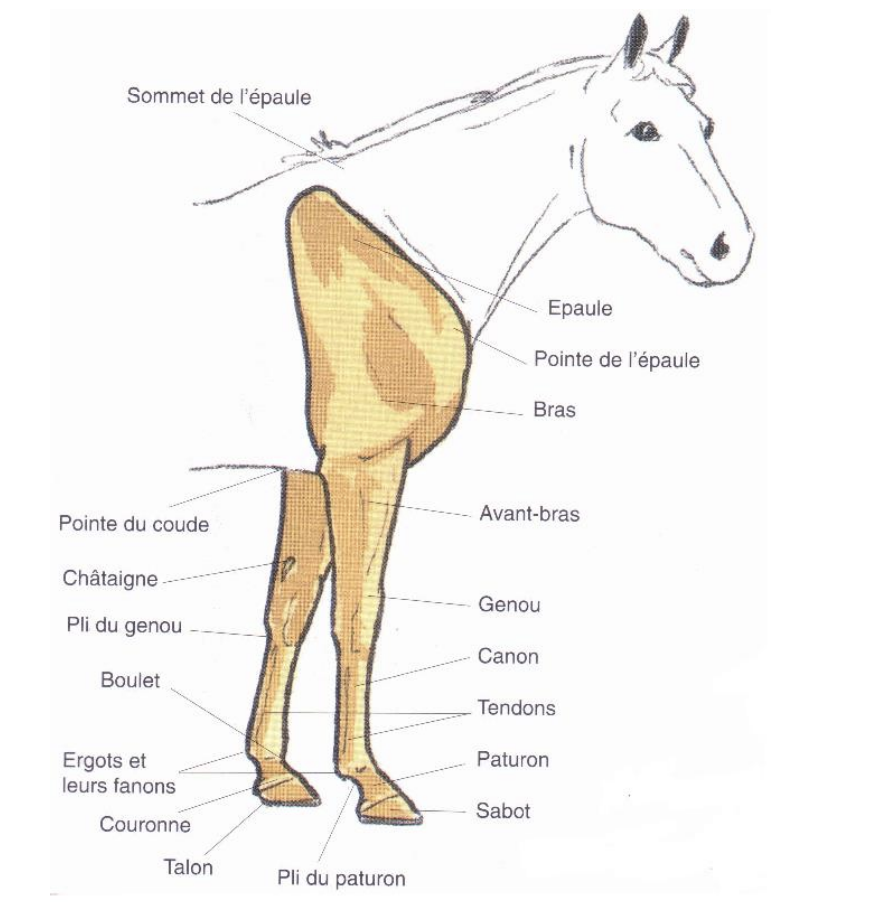

Morphologie
Qu'est ce que la morphologie ?
La morphologie du cheval est, dans le domaine de l'hippologie, la description physique externe d'un cheval.
Il ne faut pas confondre la morphologie avec l'anatomie, qui est la description des parties internes du cheval.
Morphologie générale
Le physique extérieur d'une façon globale est appelé morphologie générale.
La morphologie dite "générale" se base sur trois thèmes :
Taille
Les chevaux présentent une grande diversité de taille. Les plus petits poneys ne toisent pas plus de 50cm au garrot, les Shires dépassent régulièrement les 2m au garrot.
La taille est aussi appelée la toise. La taille est la distance du sol jusqu'à la pointe du garrot (os situé à la base de l'encolure).
La toise doit se prendre sur un sol droit. Le cheval est ferré ou non. Elle s'exprime en centimètre ou en mètre.
Pour chaque taille, il existe des catégories :
Profil
Le profil définit l'apparance de la tête et particulièrement du profil.
Il s'agit de la conformation de l'os du chanfrein. Certains types de profil sont propres à la race du cheval.
Les profils peuvent être de type :
- Dit convexe ou busqué : Le chanfrein est de forme arrondie :
- Dit rectiligne ou droit : Le chanfrein est droit :
- Dit concave ou creux : Le chanfrein est creusé en son milieu :
Le préfixe sub désigne un profil peu marqué tandis que le préfixe ultra désigne un profil très marqué.
Proportions
L'aspect global et général d'un cheval est appelé proportions. La proportion d'un cheval prends en compte la taille des membres par rapport à la taille du corps et la largeur du cheval par rapport à sa taille.
On dénombre trois catégories de chevaux :
- Le longiligne ou dolichomorphe : Ce sont les chevaux dits légers.
Elancés ils sont plus grands que larges et disposent des grands membres.
Il s'agit essentiellement des chevaux de courses et d'endurance, avec par exemple la race de cheval Pur-Sang, la race Pur-Sang Arabe, la race akhal-Teke.
- Le médioligne ou mésomorphe : Ce sont les chevaux de morphologie dite moyenne.
Leurs proportions sont généralement équivalentes. Beaucoup de chevaux de selle sont de type médioligne comme la race Selle-Français et la race Anglo-Arabe.
- Le bréviligne ou brachymorphe : Ce sont des chevaux au profil trapu, rond et de petits membres. Ils sont lourds et massifs.
Le cheval bréviligne peut être un cheval de trait avec la race de cheval de Trait Breton ou des poneys rustiques comme la race Shetland.
Poids
Le poids moyen d'un cheval de selle de taille classique est d'environ 500kg et est un cheval dit
La race Shetland et la race Fallabella sont des races légères et les chevaux de trait, la race Shire sont des races
Certains chevaux peuvent peser 1200kg voir plus.
Les parties du cheval
Les parties du corps du cheval se divise en trois parties :
L'avant-main
La partie de l'avant-main d'un cheval se compose en trois grandes parties :
- La tête
- L'encolure
- Les membres antérieurs
La tête
Composée d'un certain nombre d'organes, la tête du cheval constitue la partie du corps qui donne le plus d'informations pour juger, en premier lieu la qualité d'un individu, mais aussi son énergie, son intelligence et, bien entendu, son caractère.
Pour examiner la tête du cheval, il faut commencer par l'observer de profil afin de pouvoir déterminer sa forme, sa longueur et son port.
Ensuite il faut continuer en se positionnant de face puis terminer par une analyse détaillée de ses différentes parties, c'est-à-dire la nuque, l'appareil masticateur, la bouche, le bout du nez, les naseaux, les oreilles et les yeux.
Le profil de la tête, qui peut être concave, convexe, rectiligne ou un mixte de ceux-ci, doit être en harmonie avec sa longueur. Par exemple, elle est longue chez le Pur Sang qui possède un profil rectiligne ou court chez le Breton qui a un profil concave.
La tête est également liée directement au type morphologique d'ensemble du cheval qui peut être longiligne, médioligne ou bréviligne. Elle contribue d'ailleurs à définir ce dernier.
Élément capital pour l'équilibre et la conduite du cheval, le port de la tête fait, en général, au repos un angle de 90 degrés avec la direction de son encolure.
Quand il est plus ouvert on dit que le cheval « porte au vent ». Par ailleurs lorsque le cheval s'encapuchonne en rapprochant sa tête de son poitrail, lors d'un ramener au repos, il est souvent difficile à conduire pendant la marche.
La largeur du front a également son importance où l'on peut définir si le cheval est brachycéphale ou dolichocéphal. Le cheval brachycéphale possède un crâne large avec une importante distance entre ses yeux.
Fréquent chez le cheval de sang il s'associe souvent à un profil rectiligne ou concave. Le cheval dolichocéphale, est caractérisé par un développement plus important de sa face par rapport à son crâne, ainsi que par des ganaches lourdes et une réduction de la distance entre les yeux.
Il est généralement associé au profil busqué ou convexe et témoignerait d'un éloignement par rapport au cheval de sang.
L'encolure
L′encolure du cheval est la partie de l'anatomie du cheval correspondant au cou, reliant sa tête à son corps.
L'encolure démarre au niveau de la nuque et s'arrête au niveau du garrot. Seules ses vertèbres atlas et axis sont mobiles, permettant une flexion de la tête sur l'encolure au seul niveau de la nuque.
L'encolure, d'une manière générale, se compose ensentiellement de muscle.
On y retrouve quelques éléments morphologiques du cheval : la crinière et la trachée.
C'est sur cette partie du corps du cheval que l'on peut apprécier les différents types morphologiques d'encolure.
Les membres antérieurs
Le membre antérieur d'un cheval se compose lui aussi de nombreuses parties.
Formé des régions allant de l'épaule au sabot, l'antérieur, ou membre antérieur, est avant tout composé de deux premiers segments qui sont disposés en face de la partie avant de la cage thoracique.
Le squelette du membre antérieur est, quant à lui, formé de la scapula ou omoplate, de l'humérus, de l'ulna ou cubitus, du radius, du carpe, des métacarpiens principaux et rudimentaires, des trois phalanges complétées des grands sésamoïdes et de l'os naviculaire.
Les muscles, qui composent l'antérieur, peuvent être divisés en muscles extenseurs, qui ouvrent les angles articulaires, et en muscles fléchisseurs, qui, inversement, les ferment. Durant la marche, l'effet oppose les muscles qui assurant la projection du membre vers l'avant, nommé aussi protraction, avec ceux qui rétractent le membre vers l'arrière, créant ainsi les forces de propulsion.
Ces derniers n'ont pas un rôle fonctionnel très important pendant la marche normale. Ils sont par contre exercés dans certains airs de manège.
